MSc candidate in Robot Control. Specializing in adaptive control systems, autonomous underwater vehicles, and haptic teleoperation. Building intelligent systems at the intersection of electronics and robotics.
As an Electrical and Electronics Engineer currently pursuing a Master's degree in Robot Control at Izmir Katip Celebi University, I bring a strong analytical mindset and passion for innovation. My research centers on designing and implementing advanced nonlinear control systems for autonomous underwater vehicles (AUVs), with a focus on adaptive backstepping and intelligent neural network controllers.
My professional journey spans data center infrastructure engineering at Huawei Technologies and industrial automation at East African Bottling. These experiences have shaped my ability to tackle complex engineering challenges — from enterprise-grade server deployments to designing innovative wastewater treatment systems.
Currently, I'm deeply engaged in cutting-edge research on haptic teleoperation, fault-tolerant control, and sonar-assisted autonomy for underwater robotics. I'm fluent in English and Turkish, proficient in MATLAB/Simulink, ROS, and Gazebo, and driven by the challenge of creating systems that make a real impact.
Huawei Technologies Ltd. — Addis Ababa, Ethiopia
Nov 2023 – Nov 2024
Led data center design and deployment for enterprise clients. Configured enterprise-grade server and storage systems, created Low-Level Design documentation, and ensured seamless system integration and acceptance testing. Provided critical infrastructure maintenance and cloud data center support.
East African Bottling Share Company — Addis Ababa, Ethiopia
Mar 2022 – Jun 2022
Conducted industrial workflow analysis and oversaw machine operation and maintenance. Developed an innovative oil skimmer system for wastewater treatment and participated in feasibility studies and system installation projects.
Lyapunov-Based Adaptive Backstepping, Neural Dynamic Compensation, Static BLF & 11-Case Thesis Benchmark
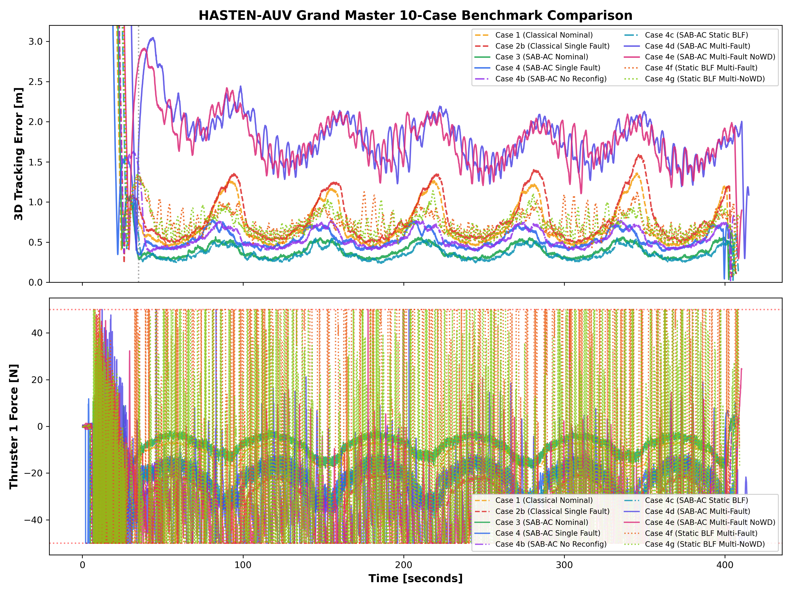
HASTEN-AUV (Stage 1) establishes a multi-layered, fault-tolerant nonlinear control architecture engineered specifically for Autonomous Underwater Vehicles (AUVs) navigating hazardous aquatic environments under severe thruster degradation and fluid disturbances. The core framework seamlessly couples Lyapunov-based Adaptive Backstepping Control (ABS) with Radial Basis Function Neural Networks (RBFNN) to online-identify unmodeled hydrodynamic damping, current perturbations, and thruster efficiency losses without requiring explicit dynamic models.
To strictly enforce operational safety boundaries during subterranean pipe inspection, Static & Dynamic Barrier Lyapunov Functions (BLF) guarantee asymptotic tracking error convergence within strict error funnels. In addition, real-time Watchdog Failure Diagnostics dynamically detect single and multi-thruster breakdowns, immediately reconfiguring the control allocation matrix to preserve vehicle control authority and prevent catastrophic drift.
Having successfully validated all 11 control scenarios in ROS 2 Gazebo Harmonic, the system is actively undergoing physical deployment. Real-world validation features a custom 6-DOF BlueROV2 vehicle, a 3D Systems Touch Haptic Stylus for active force-feedback teleoperation overrides, a 3D Multibeam Imaging Sonar for real-time wall-following perimeter extraction, and custom embedded electronics currently undergoing physical pool testing.
| Run Scenario ID | Duration (s) | Max Depth (m) | Danger Time (s) | Defects Found | Settling Time | RMSE 3D (m) | RMSE X (m) | RMSE Y (m) | RMSE Z (m) | RMSE Yaw (rad) | ITAE 3D | ITAE X | ITAE Y | ITAE Z | ITAE Yaw |
|---|---|---|---|---|---|---|---|---|---|---|---|---|---|---|---|
| Case 1: ABS Nominal | 402.2 | 8.35 | 0 | 34 | 22.8 s | 0.789 | 0.595 | 0.517 | 0.013 | 0.096 | 53,932.3 | 39,625.2 | 30,111.5 | 913.8 | 1,827.8 |
| Case 2: ABS Faulted (Uncompensated) | 423.4 | 8.16 | 0 | 40 | 32.8 s | 9.663 | 7.524 | 6.063 | 0.028 | 1.359 | 546,201.6 | 371,596.6 | 338,930.8 | 1,536.3 | 76,894.0 |
| Case 2b: ABS Reconfigured Faulted | 402.2 | 8.66 | 0 | 37 | 28.8 s | 0.812 | 0.614 | 0.531 | 0.013 | 0.137 | 55,746.7 | 41,012.0 | 31,003.0 | 918.2 | 1,858.4 |
| Case 3: NN-ABS Nominal | 403.6 | 8.88 | 0 | 41 | 28.0 s | 0.440 | 0.333 | 0.288 | 0.005 | 0.074 | 30,332.2 | 22,534.2 | 16,710.4 | 110.7 | 749.9 |
| Case 4: NN-ABS Faulted | 400.2 | 8.70 | 0 | 42 | 28.8 s | 0.587 | 0.443 | 0.385 | 0.006 | 0.107 | 39,098.1 | 29,520.3 | 21,569.7 | 95.1 | 1,198.2 |
| Case 4b: NN-ABS No-Reconfig Faulted | 404.4 | 8.51 | 0 | 39 | 34.2 s | 0.612 | 0.462 | 0.401 | 0.007 | 0.109 | 40,528.0 | 30,572.5 | 22,492.2 | 93.6 | 1,288.4 |
| 🥇 Case 4c: NN-ABS Static BLF Faulted | 401.2 | 8.53 | 0 | 40 | 26.2 s | 0.420 | 0.318 | 0.274 | 0.003 | 0.075 | 28,712.7 | 21,451.4 | 15,697.5 | 58.5 | 776.2 |
| Case 4d: NN-ABS Multi-Fault | 406.0 | 8.98 | 0 | 45 | 99.4 s | 1.875 | 1.506 | 1.117 | 0.014 | 0.633 | 126,819.9 | 95,085.2 | 66,493.0 | 605.0 | 38,989.5 |
| Case 4e: NN-ABS No-Watchdog Multi-Fault | 405.0 | 8.68 | 0 | 44 | 22.8 s | 1.807 | 1.459 | 1.065 | 0.014 | 0.624 | 122,214.6 | 91,532.2 | 63,109.5 | 646.0 | 38,667.2 |
| 🥇 Case 4f: NN-ABS Static BLF Multi-Fault (Watchdog) | 406.2 | 8.80 | 0 | 44 | 41.2 s | 0.726 | 0.556 | 0.468 | 0.007 | 0.434 | 49,792.0 | 35,171.4 | 27,446.1 | 376.4 | 27,498.3 |
| Case 4g: NN-ABS Static BLF Multi-Fault (No Watchdog) | 406.8 | 8.37 | 0 | 44 | 41.4 s | 0.707 | 0.525 | 0.473 | 0.007 | 0.432 | 48,527.8 | 33,790.0 | 27,296.0 | 379.3 | 27,438.2 |
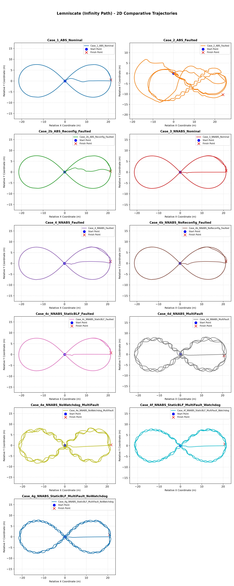
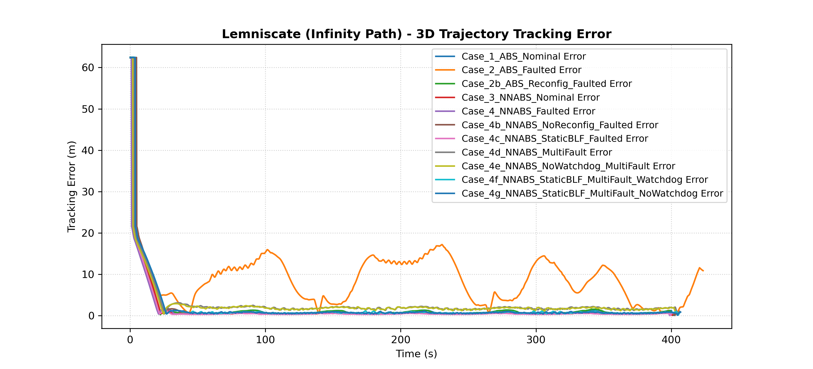
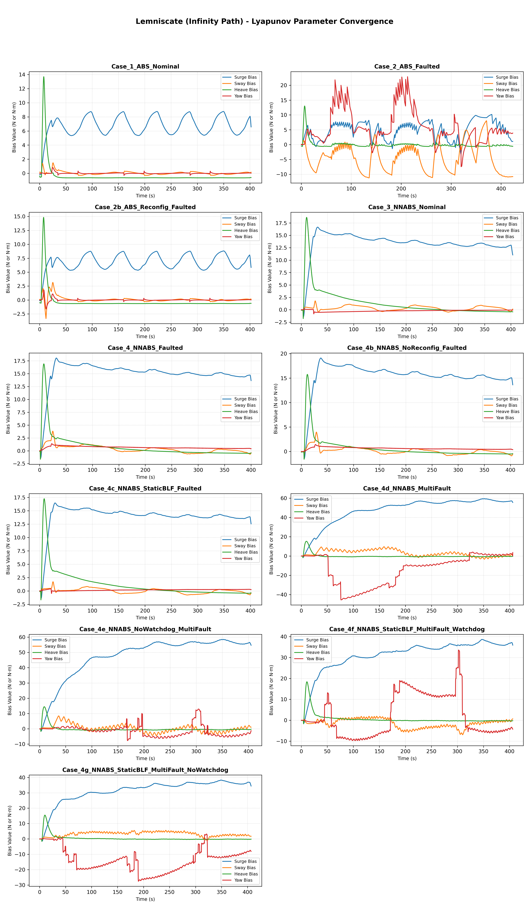
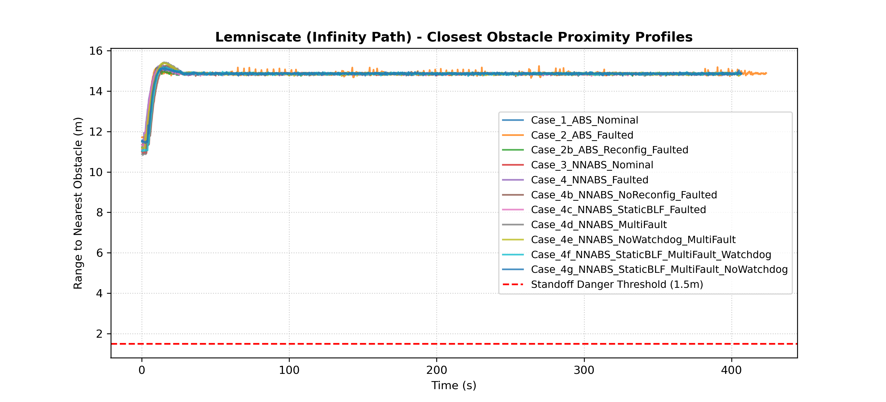
A Comparative Analysis of PID, SMC, and DCAL Controllers Under Harmonic Perturbations
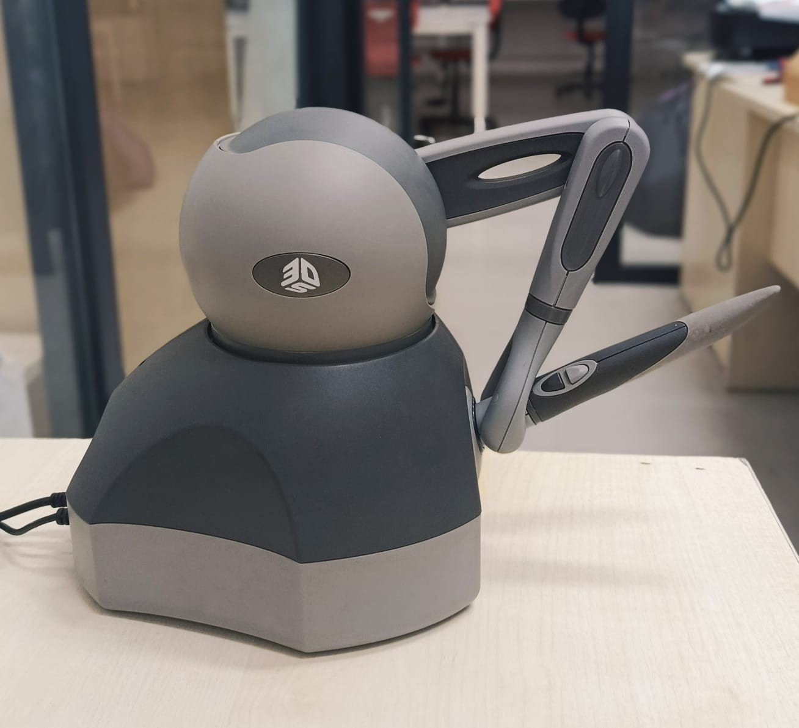
A Desired Compensation Adaptive Law (DCAL)-based controller is developed for trajectory tracking of a 3-DOF haptic manipulator under 2 Hz harmonic disturbances. The proposed framework introduces real-time adaptive parameter identification, enabling dynamic compensation of configuration-dependent inertia and external perturbations — outperforming conventional PID and Sliding Mode Control architectures.
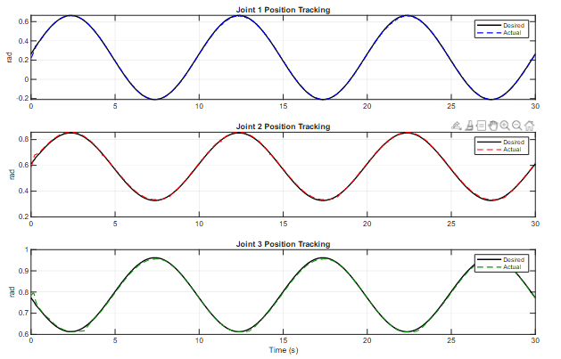
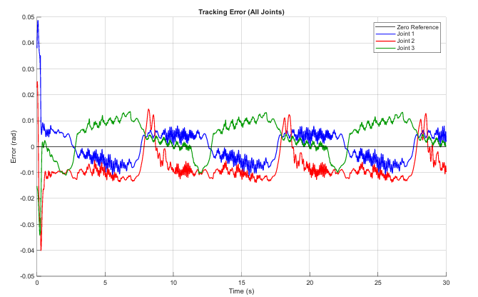
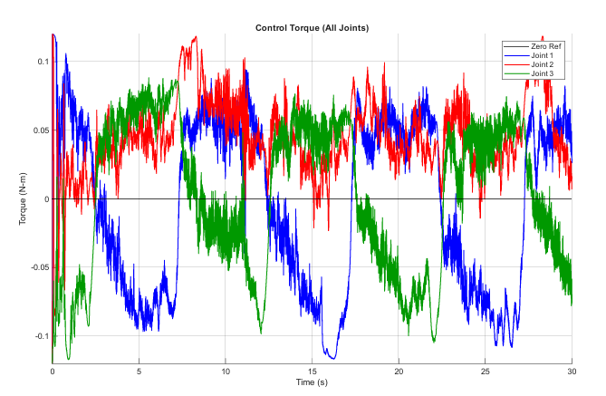
7 Nonlinear Controllers Benchmarked in Gazebo Harmonic — Circle, Figure-8 & 3D Spline Trajectories
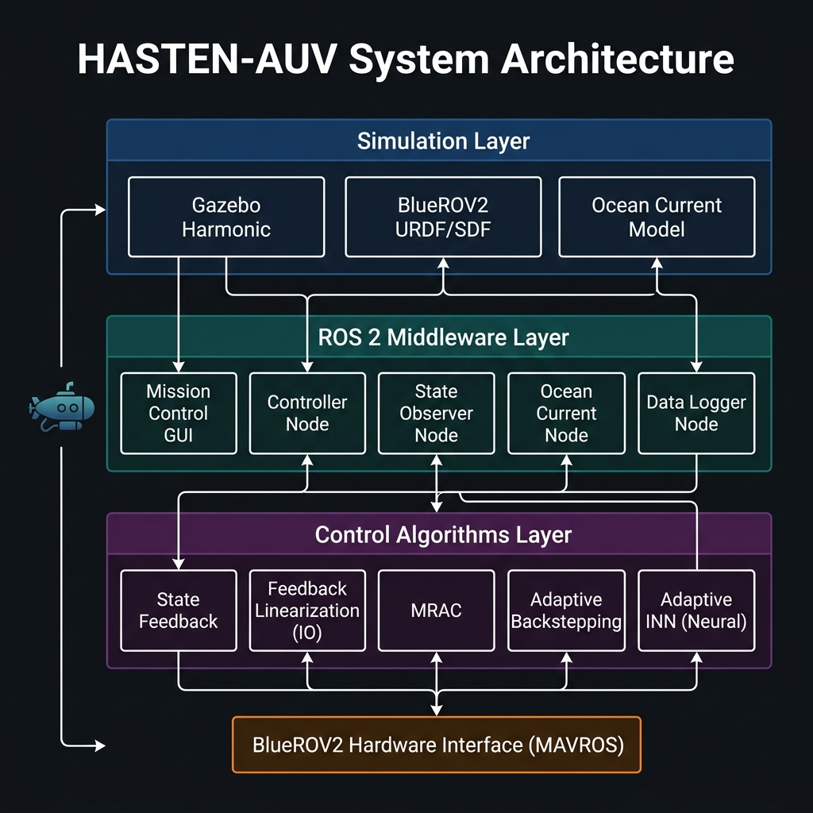
A full-stack ROS 2 simulation framework implementing and benchmarking 7 nonlinear control architectures on a BlueROV2-inspired 4-DOF AUV. Dynamics modeled using Fossen's formulation with real BlueROV2 hydrodynamic parameters. Validated across three trajectory types: circular, figure-8 (lemniscate), and 3D spline — with ocean current disturbance injection.
| Controller | RMSE (m) | ITAE | Type |
|---|---|---|---|
| 🥇 Backstepping | 0.0364 | 40.57 | Nonlinear |
| 🥈 FL I/O | 0.0278 | 10.76 | Nonlinear |
| Adaptive INN | 0.0393 | 41.31 | Neural |
| Adapt. Backstepping | 0.0681 | 77.02 | Adaptive |
| MRAC | 0.1317 | 120.6 | Adaptive |
| State Observer | 0.1934 | 299.4 | Linear |
| State Feedback | 0.2305 | 381.2 | Linear |
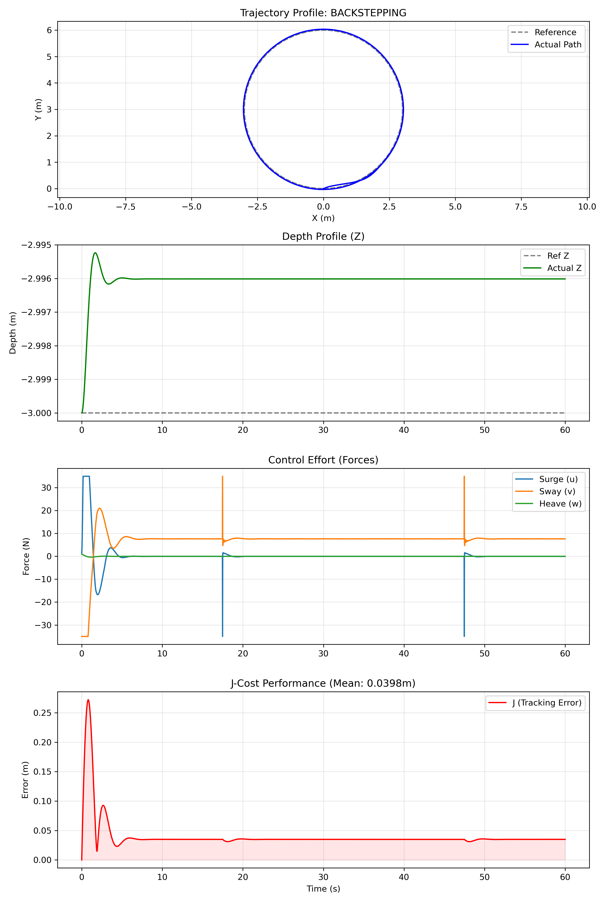
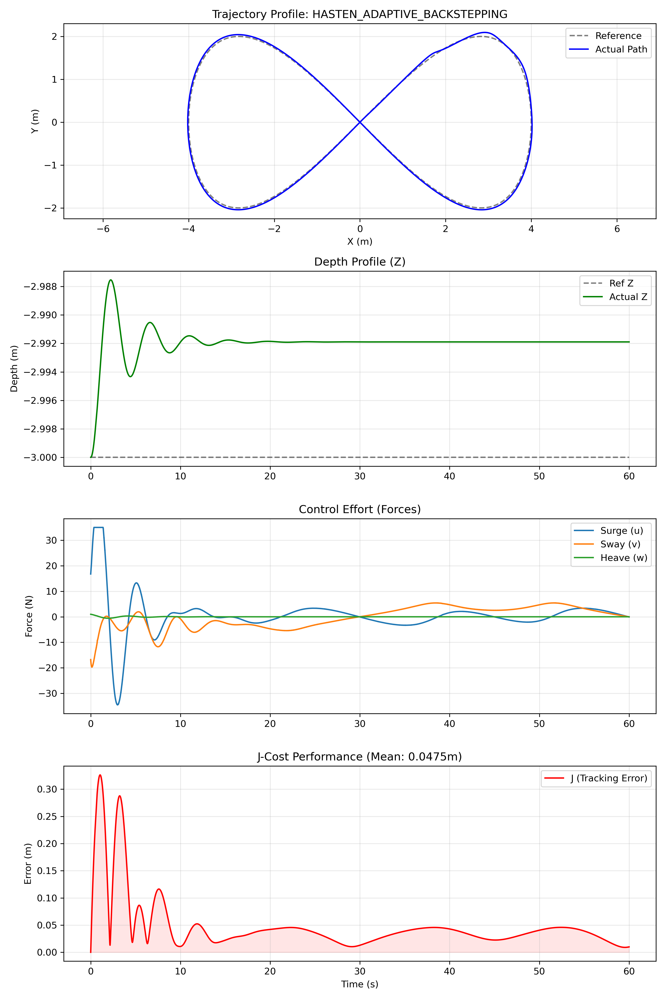
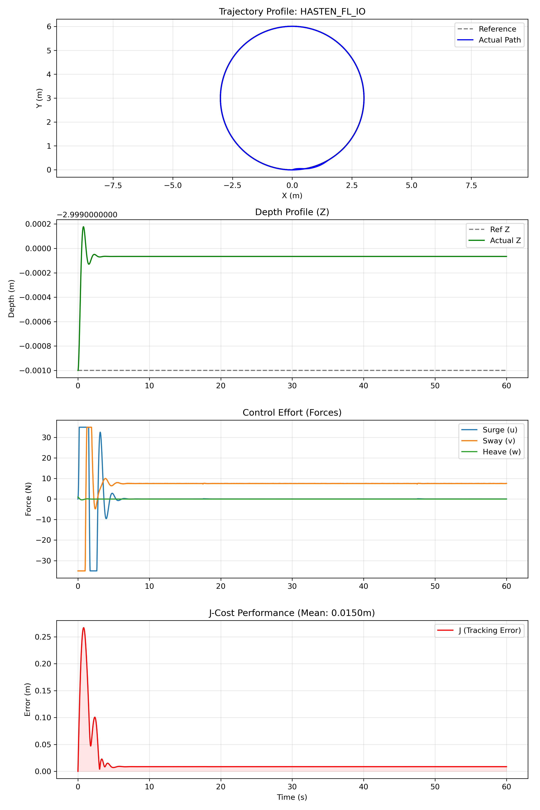
Izmir Katip Celebi University, Turkey
Robot control specialization: advanced linear & nonlinear control, robot kinematics/dynamics, state-space control, ROS-based robotics, Gazebo simulation, and autonomous systems.
Addis Ababa University, Ethiopia
Circuit analysis, digital electronics, electrical machines, control engineering, embedded systems, and programming (C/C++ & Java). Thesis: Solar-powered device charger.
Huawei Technologies — Jun 2023
Enterprise storage systems certification — data center storage deployment, management, and Huawei cloud infrastructure.
ALX Africa — Oct 2022
Remote collaboration, digital productivity tools, virtual team coordination, and workflow optimization.
View or download my detailed CV with full professional experience, publications, and technical skills.
Football
Cycling
Hiking
I'm always open to research collaborations, projects, and new opportunities.
Scan to connect on LinkedIn